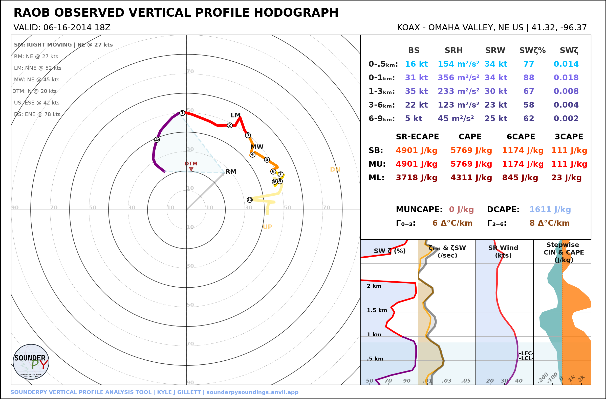
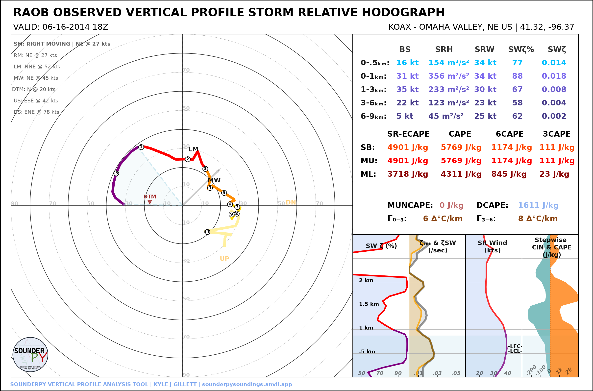
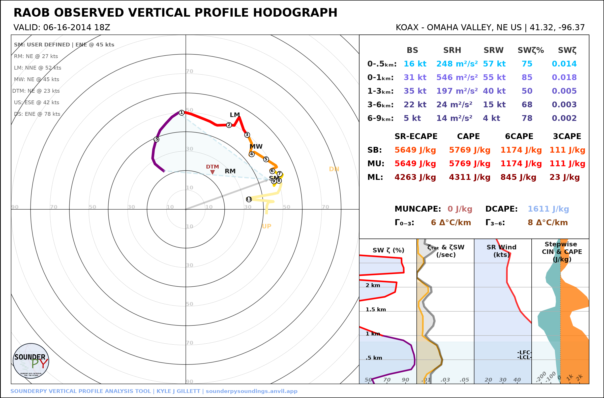

🌀 Hodograph Options
SounderPy’s standalone hodograph can be displayed in ground-relative or storm-relative coordinates and can use an automatically calculated or user-defined storm motion.
This tutorial covers:
ground-relative hodographs;
storm-relative hodographs;
right-moving, left-moving, and mean-wind storm motions;
user-defined storm motion;
hodograph boundary overlays;
dark mode and saved figures.
Retrieve the Example Profile
import sounderpy as spy
data = spy.get_obs_data(
"OAX",
"2014", "06", "16", "18",
hush=True,
)
Ground-Relative Hodograph
The default hodograph is ground relative:
spy.build_hodograph(
data,
sr_hodo=False,
radar=None,
map_zoom=0,
)
{kind=link}

Storm-Relative Hodograph
Set sr_hodo=True to subtract the selected storm-motion vector from the
winds:
spy.build_hodograph(
data,
sr_hodo=True,
radar=None,
map_zoom=0,
)
{kind=link}

Storm-relative plotting requires a valid storm-motion vector. If SounderPy cannot determine one from the profile, the plot falls back to a ground-relative hodograph.
Selecting Storm Motion
The default storm motion is:
storm_motion="right_moving"
Common supported string forms include:
storm_motion="right_moving"
storm_motion="left_moving"
storm_motion="mean_wind"
These select the right-moving Bunkers motion, left-moving Bunkers motion, or mean-wind motion used by SounderPy calculations.
User-Defined Storm Motion
A custom storm motion can be supplied as:
[direction_degrees, speed_knots]
For example:
spy.build_hodograph(
data,
storm_motion=[250.0, 45.0],
radar=None,
map_zoom=0,
)
{kind=link}

The same custom motion can be used for a storm-relative hodograph:
spy.build_hodograph(
data,
storm_motion=[250.0, 45.0],
sr_hodo=True,
radar=None,
map_zoom=0,
)
Hodograph Boundaries
A straight boundary axis can be added using hodo_boundary.
The argument is a dictionary containing matching lists of angles and colors:
boundary = {
"angle": [45],
"color": ["tab:purple"],
}
spy.build_hodograph(
data,
hodo_boundary=boundary,
radar=None,
map_zoom=0,
)
{kind=link}
Multiple boundaries can be supplied:
boundary = {
"angle": [45, 120],
"color": ["tab:purple", "tab:blue"],
}
Theme and Output Options
Dark mode:
spy.build_hodograph(
data,
dark_mode=True,
radar=None,
map_zoom=0,
)
Save at higher resolution:
spy.build_hodograph(
data,
radar=None,
map_zoom=0,
dpi=200,
save=True,
filename="oax_hodograph.png",
)
CLI Examples
Save a ground-relative hodograph:
sounderpy obs OAX 2014-06-16 18 \
--plot hodograph \
--map-zoom 0 \
--plot-file oax_hodograph.png
Save a storm-relative hodograph:
sounderpy obs OAX 2014-06-16 18 \
--plot hodograph \
--storm-relative \
--map-zoom 0 \
--plot-file oax_sr_hodograph.png
Save a dark storm-relative hodograph:
sounderpy obs OAX 2014-06-16 18 \
--plot hodograph \
--storm-relative \
--dark-mode \
--map-zoom 0 \
--plot-file oax_sr_dark.png
Next Steps
Continue to Working with Data Sources to see how different profile sources feed the same SounderPy plotting workflow.
See also: